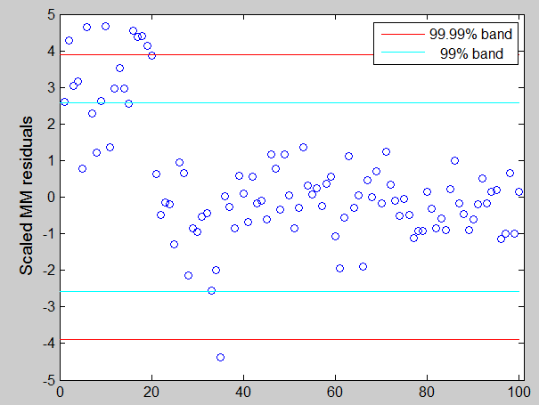

| Flexible Statistics Data Analysis Toolbox™ |
|
MM estimators in linear regression (using S estimators as starting values)
[out] = MMreg(y,X)
[out] = MMreg(y,X,param1,val1,param2,val2,...)
[out,varargout] = MMreg(y,X,...);
[out] = MMreg(y,X) computes MM estimators in linear regression. An S-estimator is used as starting value, and an M estimator with fixed scale and redescending psi Tukey biweight function is used from there. The default nominal efficiency which is used is 95%.
y is a vector of length n containing the response values, while X is the n-by-p-1 matrix which contains (in the columns) the values of p-1 predictive terms
If an optional output variable is specified for varargout, the matrix of the indices of the samples extracted for computing the initial S estimator is returned in that variable.
[out] = MMreg(y,X) returns the following information
beta − p-by-1 vector of beta MM coefficient estimates, including the intercept when input options intercept is equal to 1 or it is missing. out.beta=[intercept slopes].
auxscale − scalar, S estimate of the scale (or supplied external estimate of scale, if option InitialEst is not empty).
residuals − n-by-1 vector containing the scaled residuals from the MM loop. out.residuals=(y-X*out.beta)/out.auxscale
weights − n-by-1 Boolean vector containing weights for each observations. The elements of this vector lie in the interval 0 or 1. Elements close to 0 values are associated with the outliers.
Sbeta − p-by-1 vector of beta S coefficient estimates, including the intercept when input options intercept is equal to 1 or it is missing.
Ssingsub − Number of subsets without full rank in the S preliminary part. Notice that if this number is greater than 0.1*(number of subsamples) a warning is produced on the screen
outliers − this output is present only if conflev has been specified. It is a vector containing the list of the units declared as outliers using confidence level specified in input scalar conflev
conflev − confidence level which is used to declare outliers. Remark: scalar out.conflev will be used to draw the horizontal lines (confidence bands) in the plots. If conflev is not specified a nominal 0.975 confidence interval will be used.
y − Response vector y. The field is present if option yxsave is set to 1.
X − Data matrix X. The field is present if option yxsave is set to 1.
class − string containing 'MM'
[out] = MMreg(y,X,param1,val1,param2,val2,...) specifies one or more of the name/value pairs described in the following table.
| Parameter | Value |
|---|---|
| 'intercept' |
If 1, a model with constant term will be fitted (default) else no constant term will be included. |
| 'InitialEst' |
A structure containing starting values of the MM-estimator.
The structure must contain
|
| 'eff' |
scalar defining nominal efficiency (i.e. a number between |
| 'effshape' | dummy scalar. If effshape=1 efficiency refers to shape efficiency else (default) efficiency refers to location. |
| 'maxiter' |
scalar defining maximum number of iterations in the MM loop. Default value is 100 |
| 'tol' |
scalar controlling tolerance in the MM loop. Default value is 1e-7 |
| 'conflev' |
Scalar between 0 and 1 containing confidence level which is used to declare units as outliers. Usually 0.95, 0.975, 0.99 (individual alpha) or 1-0.05/n, 1-0.025/n, 1-0.01/n (simultaneous alpha). Default value is 0.975 |
| 'conflev' |
Scalar between 0 and 1 containing confidence level which is used to declare units as outliers. Usually conflev=[0.95, 0.975, 0.99] (individual alpha) or [1-0.05/n, 1-0.025/n, 1-0.01/n] (simultaneous alpha). Default value is 0.975 |
| 'plots' |
Scalar. If plots=1 a plot with robust residuals is produced else (default) no plot is produced. |
| 'nocheck' |
Scalar. If nocheck=1 no check is performed on matrix y and matrix X. Notice that y and X are left unchanged. In other words the additional column of ones for the intercept is not added. As default nocheck=0. The controls on h, alpha and nsamp still remain. |
| 'msg' |
Scalar which controls whether to display or not messages on the screen If msg=1 (default) messages are displayed on the screen about estimated time to compute the estimator else no message is displayed on the screen. |
| 'nomes' |
Scalar. If nomes is equal to 1 no message about estimated time to compute LMS is displayed, else if nomes is equal to 0 (default), a message about estimated time is displayed. |
| 'yxsave' |
scalar that is set to 1 to request that the data y and X are saved into the output structure out. Default is 0, i.e. no saving is done. |
In these examples we use the same data which have been used in the help of function FSR and LXS in order to compare the output of different procedures.
state=100;
randn('state', state);
n=100;
X=randn(n,3);
bet=[3;4;5];
y=3*randn(n,1)+X*bet;
y(1:20)=y(1:20)+13;
For outlier detection we consider both the nominal individual 1% significance level and the simultaneous Bonferroni confidence level.
% Define nominal confidence level conflev=[0.99,1-0.01/length(y)]; % Define number of subsets nsamp=3000; % Define the main title of the plots titl=''; % MM estimators [outMM]=MMreg(y,X,'conflev',conflev(1)); laby='Scaled MM residuals'; resindexplot(outMM.residuals,'title',titl,'laby',laby,'numlab','','conflev',conflev)

In this example MM estimator seems to detect half of the outlier with a Bonferroni significance level.
In this second example we simply change the seed to 543 (state=543). Using a Bonferroni size of 1%, no unit is declared as outlier and just halp of them using the 99% band.

|
|
mmmultcore.html | mmregcore.html |
|